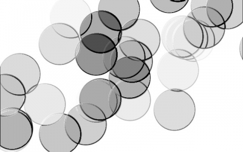

Web je již jen v režimu pro čtení a není možné přidávat nové komentáře nebo dotazy do fóra. Díky za přízeň.
Main menu
You are here
Skleněné kroužky
22. August 2009 - 14:54 — Lukáš
Upozornění: Poslední volitelný krok způsobuje pád Gimpu 2.6.6 ve Windows Vista x64. Aby Gimp nepadal spusťte ho v režimu kompatibility s Windows XP SP2.
- Vytvoříme nový obrázek s rozměry 640x400px
- Přepneme na štětec a nastavíme jej následovně:
- Teď se štětcem budeme přejíždět plátno tak dlouho, dokud nedostaneme dobrý vzor
- Duplikujeme vrstvu
- Klikneme na původní vrstvu a přejdeme na Filtry → Zkreslení → Reliéf a nsatavíme následovně:
Azimut: 330,88
Zdvih: 50,29
Hloubka: 72 - Klikneme na duplikovanou vrstvu a nastavíme jí režim „Tvrdé světlo“
 - (Volitelné) Klikněte na duplikovanou vrstvu a přejděte na Barvy → Obarvit a kroužky obarvěte


{kind=link}
{kind=link}
{kind=link}
Kategorie:
Web je již ukončen. Nebude zde přibývat žádný nový obsah. Případné dotazy prosím na l.bacovsky(a)outlook.cz
Comments
pomoc
re: pomoc
děkuji
re: děkuji
Re: Skleněné kroužky
Re: Skleněné kroužky
Re: Skleněné kroužky
Add new comment